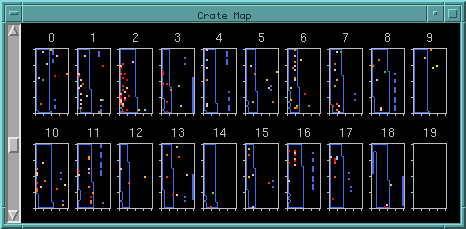

Crate Map Window

The crate map graphically shows the electronics channels of each hit.
The 20 SNO crates are indicated by numbered rectangles in the display.
Within each crate, the FEC cards run across the horizontal axis from 0
at the left to 15 at the right, and the channels within each FEC run vertically
from 0 at the bottom to 31 at the top. The mouse can be used to grab
the image and shift it horizontally and vertically. The left scrollbar controls
the magnification of the image, and allows you to zoom in or out.
With the water level display on, the channels which correspond to under-water PMT's
are outlined in blue.